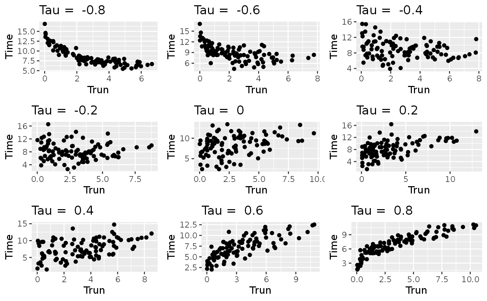
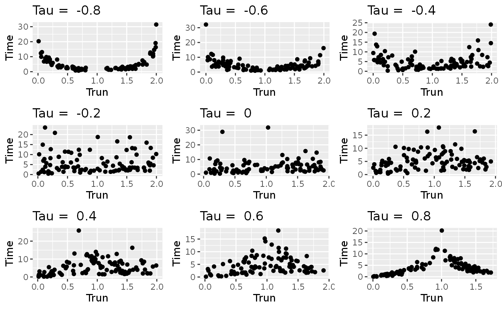

Permutation tests for general dependent truncation – illustration of the permDep function
Sy Han (Steven) Chiou
2019-08-10
Source:vignettes/vig-permDep.Rmd
vig-permDep.RmdGenerating truncated data
We define the following functions to generate survival data with dependent left-truncation.
In the first setting, we generate the survival time from a Weibull distribution with shape parameter 3 and scale parameter 8.5 and generate the truncation time from an exponential with mean 5. The dependence between the survival time and the truncation time is controlled by a normal copula from the copula package with a pre-specified pre-truncation unconditional Kendall’s tau (tau).
> library(copula)
> simDat1 <- function(n, tau) {
+ k <- 1
+ tt <- xx <- rep(-1, n)
+ kt <- iTau(normalCopula(), tau)
+ cp <- normalCopula(kt, dim = 2)
+ dist <- mvdc(cp, c("exp", "weibull"), list(list(rate = 0.2), list(shape = 3, scale = 8.5)))
+ while(k <= n){
+ dat <- rMvdc(1, dist)
+ tt[k] <- dat[1]
+ xx[k] <- dat[2]
+ if(tt[k] <= xx[k]) k = k + 1
+ }
+ data.frame(Trun = tt, Time = xx)
+ }The simDat1 funciton generates monotone dependence model and is used in Chiou et al. (2018) in the absence of censoring. The following scatterplots confirms the monotonic dependence.
> library(ggplot2)
> library(gridExtra)
> set.seed(123)
> tmp <- lapply(-4:4/5, function(x)
+ qplot(Trun, Time, data = simDat1(100, x), main = paste("Tau = ", x)))
> do.call("grid.arrange", c(tmp, ncol = 3))
In the second setting, we consider a scenario with non-monotonic dependence between the survival time and the truncation time. We used a normal copula to specify the joint distribution of \((X, |T- 0.5|)\), where \(X\) is the survival time and \(T\) is the truncation time. We generate \(X\) from a Weibull distribution with shape parameter 1 and scale parameter 4, and generate \(T\) from a uniform distribution between 0 and 1. This implies that the pre-truncation unconditional Kendall’s taus have different signs for \(T < 0.5\) and \(T\ge0.5\).
> simDat2 <- function(n, tau) {
+ k <- 1
+ tt <- xx <- rep(-1, n)
+ kt <- iTau(normalCopula(), tau)
+ cp <- normalCopula(kt, dim = 2)
+ dist <- mvdc(cp, c("unif", "weibull"),
+ list(list(min = 0, max = 1), list(shape = 1, scale = 4)))
+ while(k <= n){
+ tmp <- rMvdc(1, dist)
+ if (k <= n/2) tt[k] <- tmp[1]
+ if (k > n/2) tt[k] <- 2 - tmp[1]
+ xx[k] <- tmp[2]
+ if(tt[k] <= xx[k]) k = k + 1
+ }
+ dat <- data.frame(Trun = tt, Time = xx)
+ dat
+ }> set.seed(123)
> tmp <- lapply(-4:4/5, function(x)
+ qplot(Trun, Time, data = simDat2(100, x), main = paste("Tau = ", x)))
> do.call("grid.arrange", c(tmp, ncol = 3))
The permDep function
The arguments of permDep are as follow
> args(permDep)
function (trun, obs, permSize, cens, sampling = c("conditional",
"unconditional", "is.conditional", "is.unconditional"), kendallOnly = FALSE,
minp1Only = FALSE, minp2Only = FALSE, nc = ceiling(detectCores()/2),
seed = NULL, minp.eps = NULL, plot.int = FALSE, anim_name = NULL)
NULLThe arguments are
-
trunis the left truncation time -
obsis the observed failure time; this is defined to be the minimum of the survival time and censoring time In addition, this is required to be greater than the truncation time -
permSizeis the number of permutations -
censis the status indicator; 0 = censored, 1 = event -
samplingis a character string specifying the sampling method used in permutation. The following are permitted. -
conditionalconditional permutation -
unconditionalunconditional permutation -
is.conditionalimportance sampling version of the conditional permutation (under development) -
is.unconditionalimportance sampling version of the unconditional permutation (under development) -
kendallOnlyis a logical value indicating whether to use the conditional Kendall’s tau as the only test statistics -
minp1Onlyis a logical value indicating whether to use the minp1 test as the only test statistics -
minp2Onlyis a logical value indicating whether to use the minp2 test as the only test statistics - The default is to use all three test statistics (conditional Kendall’s tau, minp1, and minp2)
-
ncis the number of cores used in the permutation test. Whennc > 1, permutation is carried out with parallel computing methods. The default is to use half of the available number of CPU cores on the current host. -
seedis an optional vector containing random seeds to be used to generate permutation samples. Random seeds will be used when left unspecified. -
minp.epsis an optional value indicating the width of the intervals used in minp2 procedure. The following are permitted. - a single numerical number sets the common width for all intervals
- a numerical vector uses user specified width for the intervals. The length of the vector needs to be a sub-multiple or multiple of the number of uncensored events.
- a character string uses the pre-implemented algorithm to calculate the width of the intervals. This option can be either “in” or “out”, which require the minimum number of uncensored events inside or outside of each interval, respectively.
-
NULLuses the automatic selection algorithm outlined in Chiou et al. (2018) -
plot.intis a logical value indicating whether to plot the intervals when applying the minp tests. This is more useful when only one ofminp1Onlyandminp2OnlyisTRUE.
We will illustrate the usage of permDep with simulated data generated from simDat1 and simDat2.
Permutation test
We first use a small sample size example to demonstrate the different features.
> set.seed(123)
> dat <- simDat1(30, .9) ## highly correlated dataWith or without parallel computing
Note that the computation time depends on the machine setting in the current host.
> parallel::detectCores()
[1] 8
> set.seed(123);system.time(f1 <- permDep(dat$Trun, dat$Time, 500, nc = 1))
user system elapsed
19.632 0.005 19.635
> set.seed(123);system.time(f2 <- permDep(dat$Trun, dat$Time, 500, nc = parallel::detectCores()))
user system elapsed
0.072 0.076 11.496
> identical(f1, f2)
[1] TRUE
> f1
Hypothesis test of quasi-independence based on conditional Kendall's tau statistics
Conditional permutation with size = 500
p-value = 0.0020
Hypothesis test of quasi-independence based on minp1 statistics
Conditional permutation size = 500
p-value = 0.0020
Hypothesis test of quasi-independence based on minp2 statistics
Conditional permutation size = 500
p-value = 0.0060 Computation time is faster with parallel computation, e.g., f2, but using 8 does not make the program run 8 faster.
Different minp.eps options
> permDep(dat$Trun, dat$Time, 500, minp2Only = TRUE)$p.valueMinp2
[1] 0.005988024
> permDep(dat$Trun, dat$Time, 500, minp2Only = TRUE, minp.eps = 0.5)$p.valueMinp2
[1] 0.01197605
> permDep(dat$Trun, dat$Time, 500, minp2Only = TRUE, minp.eps = "in")$p.valueMinp2
[1] 0.001996008
> permDep(dat$Trun, dat$Time, 500, minp2Only = TRUE, minp.eps = "out")$p.valueMinp2
[1] 0.001996008The performance of the minp2 test depends on the specification of the interval width (e.g., minp.esp), however, the resulting \(p\)-values from the above example are significant at \(\alpha = 0.05\).
Track intervals from minp tests
Enabling plot.int allows users to visualize the intervals used in computing the log-rank statistics when applying the minp1 and the minp2 tests on the observed data.
> permDep(dat$Trun, dat$Time, 500, minp1Only = TRUE,
+ plot.int = TRUE, anim_name = "vig-minp1")
Hypothesis test of quasi-independence based on minp1 statistics
Conditional permutation size = 500
p-value = 0.0020
Hypothesis test of quasi-independence based on minp2 statistics
Conditional permutation size = 500
p-value = NA > permDep(dat$Trun, dat$Time, 500, minp2Only = TRUE,
+ plot.int = TRUE, anim_name = "vig-minp2")> permDep(dat$Trun, dat$Time, 500, minp2Only = TRUE, minp.eps = "in",
+ plot.int = TRUE, anim_name = "vig-minp2-2")
Reference
Chiou, Sy Han, Jing Qian, Elizabeth Mormino, Rebecca A Betensky, Lifestyle Flagship Study of Aging, Harvard Aging Brain Study, Alzheimer’s Disease Neuroimaging Initiative, and others. 2018. “Permutation Tests for General Dependent Truncation.” Computational Statistics & Data Analysis 128. Elsevier: 308–24.